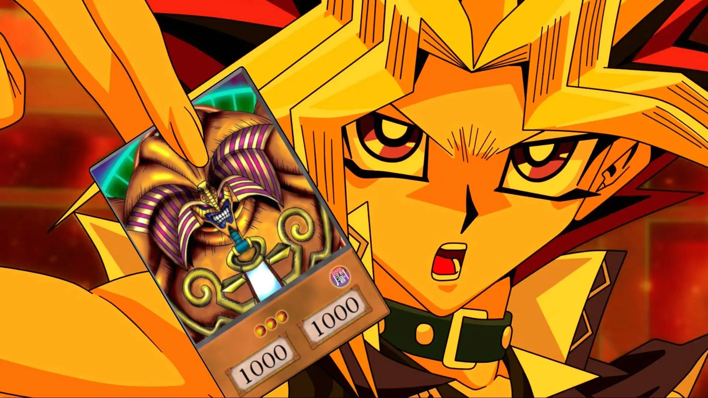
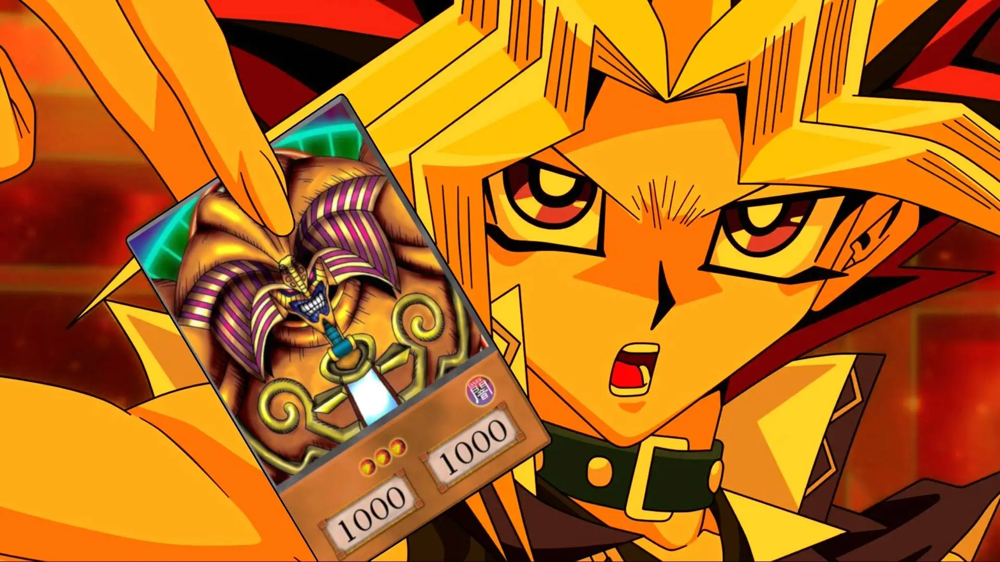
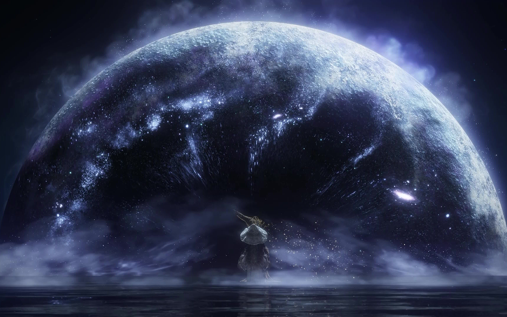

《游戏王》
发布于 2023年6月28日
《游戏王》是由日本漫画家高桥和希作画的漫画，并且依此为改编电视动画与游戏。游戏的历史，可以追溯到五千年以前的古代埃及时期。古代的游戏，用来预言人类和法老王的未来，是决定命运的魔法般的仪式。那些被称为黑暗游戏。然而，有名少年完成了“千年积木”，接受黑暗游戏，成为正义的化身。光和暗，拥有两个心灵的少年的名字，人称“游戏王”。
发布于 2023年6月28日
《游戏王》是由日本漫画家高桥和希作画的漫画，并且依此为改编电视动画与游戏。游戏的历史，可以追溯到五千年以前的古代埃及时期。古代的游戏，用来预言人类和法老王的未来，是决定命运的魔法般的仪式。那些被称为黑暗游戏。然而，有名少年完成了“千年积木”，接受黑暗游戏，成为正义的化身。光和暗，拥有两个心灵的少年的名字，人称“游戏王”。
发布于 2023年7月20日
故事发生在名为“交界地”的地方，这里的人们拥戴永恒女王玛莉卡，也受到她的祝福。 所有接受祝福的人瞳孔中都有黄金一般的光芒，但也有些人因为各种原因失去了赐福，眼中的光芒消逝。这些人就被称为褪色者，并因此被逐出交界地。 某天因为作为祝福核心的“艾尔登法环”被击碎，祝福受到污染的半神们为了收集法环碎片发动了一场又一场的战争，导致世界变的满目疮痍，褪色者们因为法环破碎恢复了祝福。 而玩家们扮演的角色便是褪色者，玩家的目标即是收集法环碎片，挑战半神，最终成为交界地的王者并开辟新的时代。
发布于 2023年7月1日
远古时代，世界还未分化，笼罩在大雾之中。四处都是灰色的岩石，高耸的大树及不朽古龙。 然后，某一天燃起了初始之火。随着火之崛起，世界开始出现了差异。 热与冷、生与死、光与暗。 然后，有几只从黑暗中诞生的物种，受到火的吸引，并在火的周围找到了王的灵魂：最初的死者尼特、伊札里斯的魔女、阳光之王葛温与他的骑士们，以及无人所知的渺小人类。 他们获得了王的力量后，向古龙发起挑战。葛温之雷贯穿了犹如岩石的鳞片，魔女的火焰形成了风暴，尼特掀起了死亡瘴气。而随着无鳞白龙希斯的背叛，古龙最终战败，火之时代就此开始。 但火终有熄灭之时，只剩下黑暗。 现在，火即将熄灭。光明无法照耀人世，夜晚无止境的持续。而受诅咒的黑暗之环，开始出现在人群中……黑暗之环意味着拥有的人将受到不死的诅咒。在王国里，不死人全会被逮捕送至北方拘押，直至世界终了。 ……而这亦是主人公的命运。然而在身份不明的骑士帮助下，主人公离开了地牢。 根据传说，极少数被选上的不死人可以离开不死院，前往远土-古代诸王之地罗德兰进行巡礼。 主人公就此踏上巡礼之路，直面这个逐渐灰暗的世界。
发布于 2023年7月2日
The first snow came.